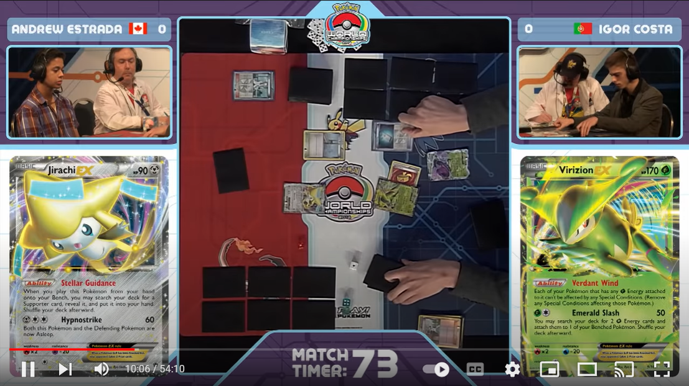
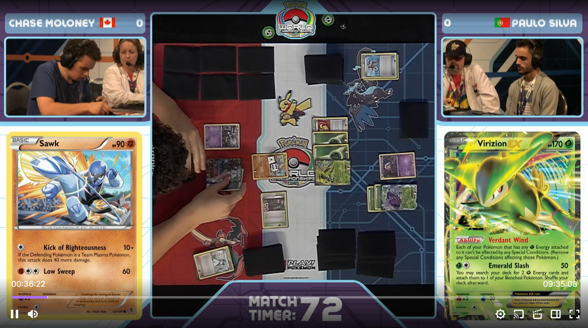
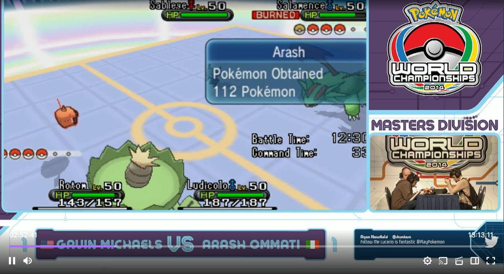
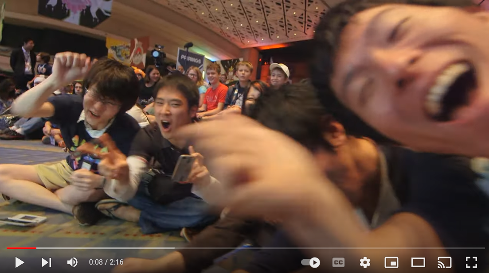
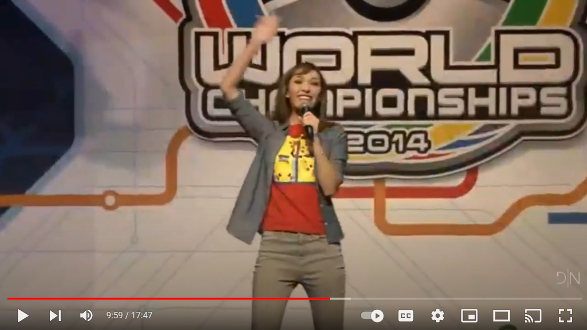

2014 Worlds - Masters Finals
Andrew Estrada (VirGen) vs Igor Costa (VirGen) in the finals of the 2014 World Championships.
2014 Worlds - Seniors Finals

Alex Croxton (Blastoise) vs Trent Orndorff (Accelgor Trevenant) in the finals of the 2014 World Championships.
2014 Worlds - Juniors Finals

Haruto Kobayashi (TDK) vs Takashi Oguni (Yveltal Garb) in the finals of the 2014 World Championships.
2014 Worlds - All of Day 2
The entire stream from Day 2 of the 2014 World Championships, starting off with Masters Top 8, followed by Seniors Finals, Juniors Finals, Masters Finals, and VGC afterwards.
2014 Worlds - All of Day 1
The entire stream from Day 1 of the 2014 World Championships. Including the opening ceremonies, mostly VGC & 2 rounds of TCG starting at 10:50:00.
2014 Worlds - Recap
A cool recap video from the 2014 World Championships.
2014 Worlds - Opening Ceremony
The opening ceremonies of the 2014 World Championships.
2014 Worlds - Closing Ceremony

The closing & award ceremonies of the 2014 World Championships.